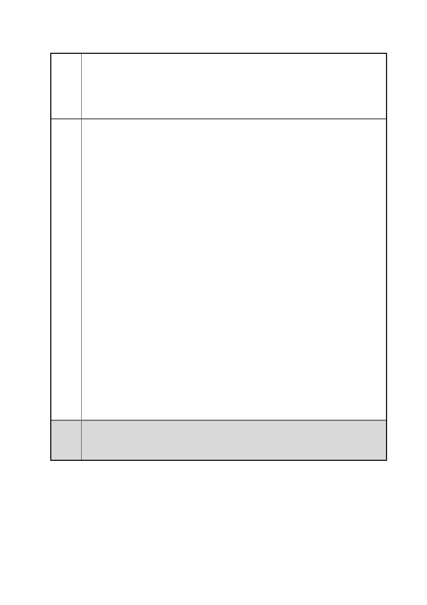

臺北市都市計畫委員會 公民或團體陳情意見綜理表
「變更臺北市信義區逸仙段二小段 33 地號等 21 筆土地（原臺北機廠）
案
名
工業區為創意文化專用區、特定專用區、道路及綠地用地主要計畫案」
及「擬定臺北市信義區逸仙段二小段 33 地號等 21 筆土地（原臺北機
廠）創意文化專用區、特定專用區、道路及綠地用地細部計畫暨劃定
都市更新地區計畫案」
辦公室前、後院景觀應以保留維護為原則，並作為建築基地景觀規劃
配置之主要元素，以維護本計畫生態資源。
（三）為減少基地開發後對周邊交通產生之衝擊，本計畫僅規劃一計
畫道路（連接菸廠路及市民大道五段供臺北文化體育園區及松菸文創
園區車輛進出）及一基地內通路（囊底路），儘可能減少穿越性車流。
此外並規定建築基地除檢討法定停車空間外，基地開發衍生之計程
車、裝卸貨車、接駁車、大客車、汽車、機車及自行車等停車需求應
於基地內自行滿足。另為避免汽機車出入動線影響主要道路車流及開
放空間活動使用之品質，停車空間以集中配置於地下層為原則。
（四）過去松菸文創園區周邊住宅社區居民多反映交通壅塞（忠孝東
路 4 段 553 巷）、停車不易及噪音問題，交通壅塞及停車不易問題未
來大巨蛋完工後停車位增加，應可獲得改善，本計畫亦針對交通、停
車問題提出相關配套措施；噪音問題後續本府文化局及該營運單位執
行營運之監督管理予以妥適處理。
五、對城市之開發效益
透過保存文化資產，延續鐵道文化歷史脈絡，未來臺北機廠將成
為極佳歷史教育場所；同時文化資產的活化再利用，將為該地區植入
新機能如文化展演、商業等活動，將串連自信義計畫區、國父紀念館、
臺北文化體育園區至京華城之文化與商業活動，促進鄰近地區文化活
動與經濟發展。另本計畫透過都市設計管制留設大面積帶狀式及廣場
式開放空間，將提供民眾大量休閒遊憩空間，提升都市生活品質。
委員
會議 內容同編號 1。
決議
第 140 頁/共 154 頁